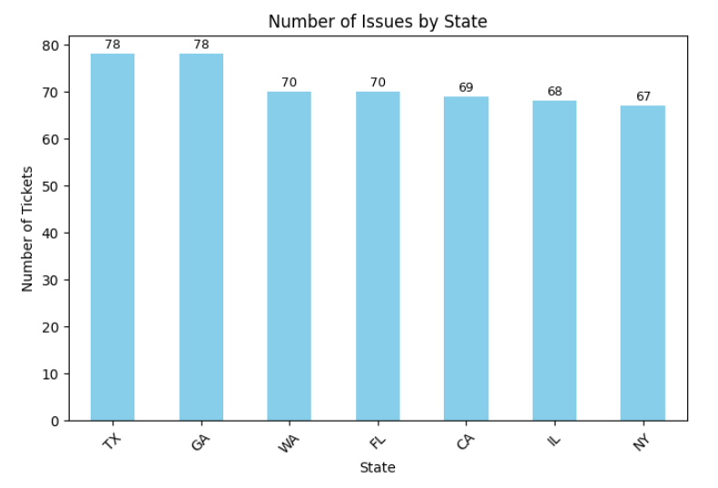
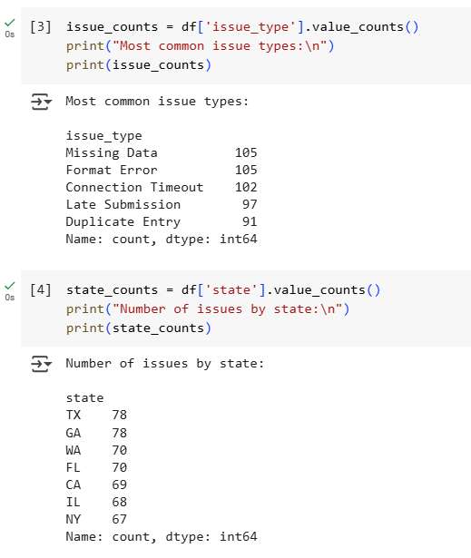
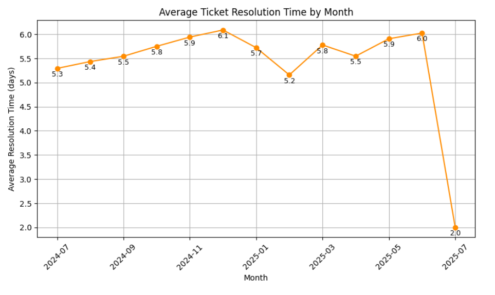

Designed and analyzed a synthetic dataset of 500 support tickets to evaluate resolution times,
issue patterns, and geographic trends. Leveraged Python for data analysis and visualization,
and produced a business-style root cause report with actionable recommendations.
This project demonstrates the ability to combine technical skills with clear business storytelling for
operational insights.



Features
- Generated synthetic ticket dataset including ticket ID, state, issue type, and resolution time
- Calculated average ticket resolution time across multiple time periods
- Identified the most common issue types and highest-volume states
- Built visualizations such as a bar chart (issues by state) and a line graph (average resolution time over months)
- Created a PDF root cause report highlighting top 3 issues and recommended improvements
- Clean, well-documented Python code suitable for technical review
Tech Stack
This project was built using:
- Python (Pandas, NumPy, Matplotlib) for data analysis and visualization